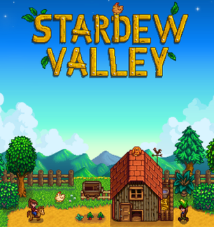

Stardew Valley

Yang terakhir adalah Stardew Valley, game premium yang mengusung genre farming simulator dengan beberapa elemen RPG. Pada game ini, pemain memiliki misi untuk membangun kembali masa kejayaan pertanian yang sempat terabaikan.
Di samping bercocok tanam, pemain juga bisa melakukan aktivitas lain seperti menangkap ikan, memelihara ternak dan berinteraksi dengan penduduk sekitar. Stardew Valley membawa visual retro yang sederhana namun dibarengi dengan konten in-game yang lumayan padat.